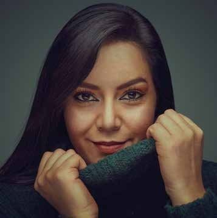

CarolinaParedes S.
Diseño marcas que las personas recuerdan y contenido que las mueve a actuar.

Hola, soy Carolina. Diseño marcas que se recuerdan.
“Diseño que se ve bien, comunica con precisión y hace que las personas se enamoren de tu marca.”
Soy Diseñadora Gráfica, Industrial y Content Creator. Trabajo en la intersección del diseño y la estrategia de contenido: desde la identidad visual de una marca hasta las piezas que conviven en su feed cada semana.
He creado para empresas y emprendimientos de Colombia, Estados Unidos, Venezuela, Panamá y Puerto Rico. Mi recorrido abarca branding, publicidad, marketing digital, empaques, interfaces y espacios comerciales, y trabajo en remoto con equipos de Latam, EE.UU. y Europa.
Lo que puedo hacer por tu marca.
Branding e identidad visual
Logotipo, paleta, tipografía, papelería y guía de marca.
Contenido para redes
Estrategia, guiones, copy y una línea gráfica única para Meta e Instagram.
Diseño publicitario
Campañas, piezas de producto, punto de venta y fechas especiales.
Empaques
Estructura y gráfica para domicilios, producto y ediciones de temporada.
Web y landing pages
Sitios en WordPress, e-commerce e interfaces para apps.
Espacios comerciales
Interiorismo, stands y renders 3D de restaurantes, cafés y consultorios.
Un proceso colaborativo por convicción.
Diseñar con el cliente, no solo para él. Así cada decisión tiene sentido y cada pieza cumple su propósito.
Escuchar
Entender tu marca, tu público y lo que quieres lograr.
Crear
Explorar ideas, formas y mensajes con intención estratégica.
Probar y ajustar
Recibir tu retroalimentación y afinar cada detalle juntos.
Entregar
Archivos finales listos para imprimir, publicar o construir.
Siete maneras de contar una misma pasión.
Publicidad, marketing digital, web, identidad, empaques, personajes y espacios. Empieza por los destacados o explora todo por disciplina.
Cada marca guarda una historia. Diseñar es encontrar la forma de contarla.
Hablemos de tu próximo proyecto.
Estoy disponible para proyectos continuos o campañas puntuales, en remoto o en Colombia. Cuéntame qué tienes en mente.